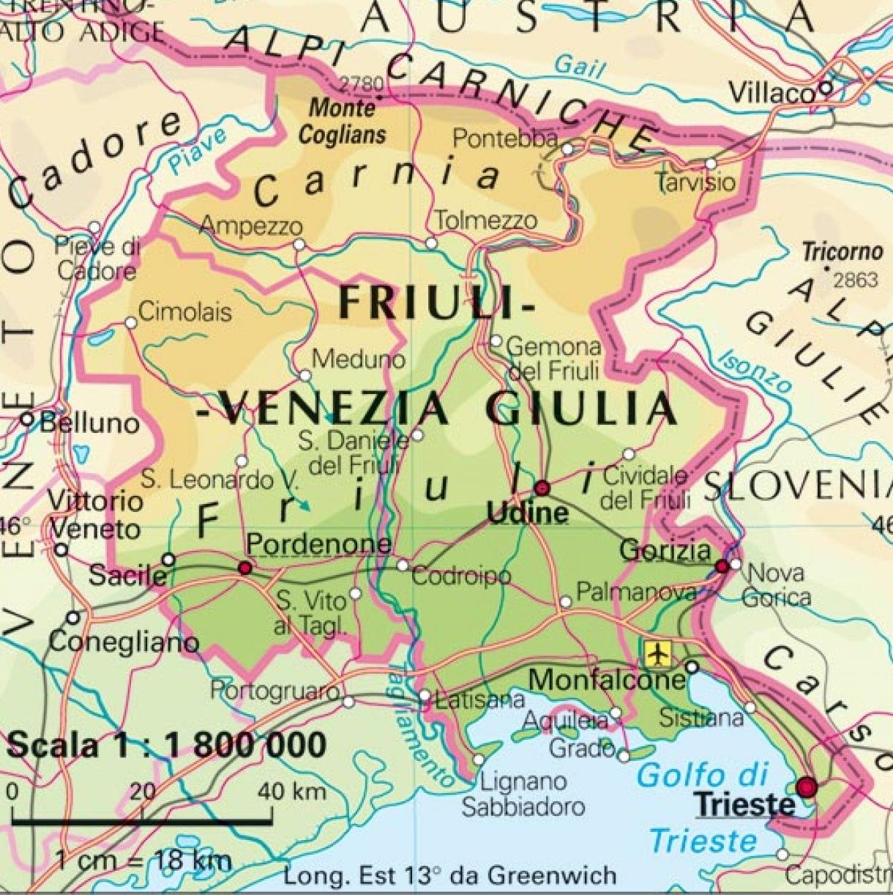
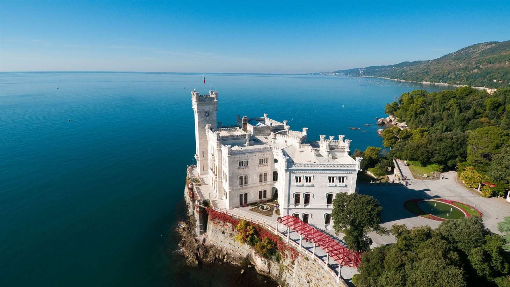

| Nome |
Friuli-Venezia Giulia |
| Capoluogo |
Trieste (TS) |
| Data di Istituzione |
31 Gennaio 1963 |
| Altitudine media |
206 m.s.l.m |
| Superficie |
7.924 km^2 |
| Abitanti (luglio 2023) |
1.191.908 |
| Densità |
150 ab/km^2 |
| Comuni |
215 |
| Province |
Gorizia (GO), Pordenone (PN), Udine (UD) |
| Confini |
Veneto, Austria, Slovenia, Mar Adriatico |
| Patrono |
S.Ermacora, S.Fortunato |
| PIL procapite (2017) |
30.900€ |
Posto da visitare assolutamente: Castello di Miramare - Trieste (TS)
Il Castello di Miramare è una maestosa residenza storica situata sulla
costa adriatica, a pochi chilometri a nord-ovest del centro di Trieste,
in Italia.
Questo castello, costruito nel XIX secolo, è noto per la sua architettura
affascinante, la sua posizione panoramica e la sua storia legata
all'Arciduca Ferdinando Massimiliano d'Austria e
all'Imperatrice Carlotta del Belgio.
Ecco alcuni dettagli su questa suggestiva residenza:
Storia:
Il Castello di Miramare fu commissionato
dall'Arciduca Ferdinando Massimiliano d'Austria e da sua moglie,
l'Imperatrice Carlotta del Belgio, come residenza estiva.
La costruzione ebbe inizio nel 1856 e fu completata nel 1860,
pochi anni prima che Massimiliano diventasse l'Imperatore del Messico.
Architettura:
Il castello è un esempio di architettura neogotica e neorinascimentale.
Progettato dall'architetto Carl Junker, presenta una combinazione di stili
architettonici e influenze, tra cui elementi medievali e rinascimentali.
La sua posizione sulla scogliera offre una vista spettacolare sul mare Adriatico.
Interni:
Gli interni del Castello di Miramare sono notevoli per la loro ricchezza
e l'attenzione ai dettagli. Le sale sono arredate con mobili d'epoca,
opere d'arte, porcellane e altri oggetti preziosi.
La Camera da Letto dell'Imperatrice è particolarmente famosa per la sua eleganza.
Il Parco di Miramare:
Il castello è circondato da un vasto parco di circa 22 ettari.
Il Parco di Miramare è caratterizzato da giardini paesaggistici,
sentieri, piante esotiche e una vasta varietà di alberi.
Si tratta di un luogo ideale per passeggiate panoramiche.
Mostra Storica e Museo Navale:
All'interno del castello, è possibile visitare una Mostra Storica
che narra la storia di Miramare e delle persone che vi hanno abitato.
Inoltre, c'è un Museo Navale che espone modelli di navi, documenti storici
e altri oggetti legati alla storia marittima.
Destino tragico dell'Arciduca:
La storia del Castello di Miramare è anche legata a un destino tragico.
Nel 1864, l'Arciduca Ferdinando Massimiliano d'Austria accettò
l'offerta di diventare Imperatore del Messico,
ma alla fine fu catturato e giustiziato nel 1867.
Apertura al pubblico:
Oggi, il Castello di Miramare è aperto al pubblico e attira visitatori
da tutto il mondo. I visitatori possono esplorare gli interni del castello,
passeggiare nei giardini e godere della vista panoramica sul mare.
Il Castello di Miramare è dunque una testimonianza affascinante della storia
e dell'architettura dell'epoca, offrendo ai visitatori un'esperienza unica
e suggestiva nella città di Trieste.
